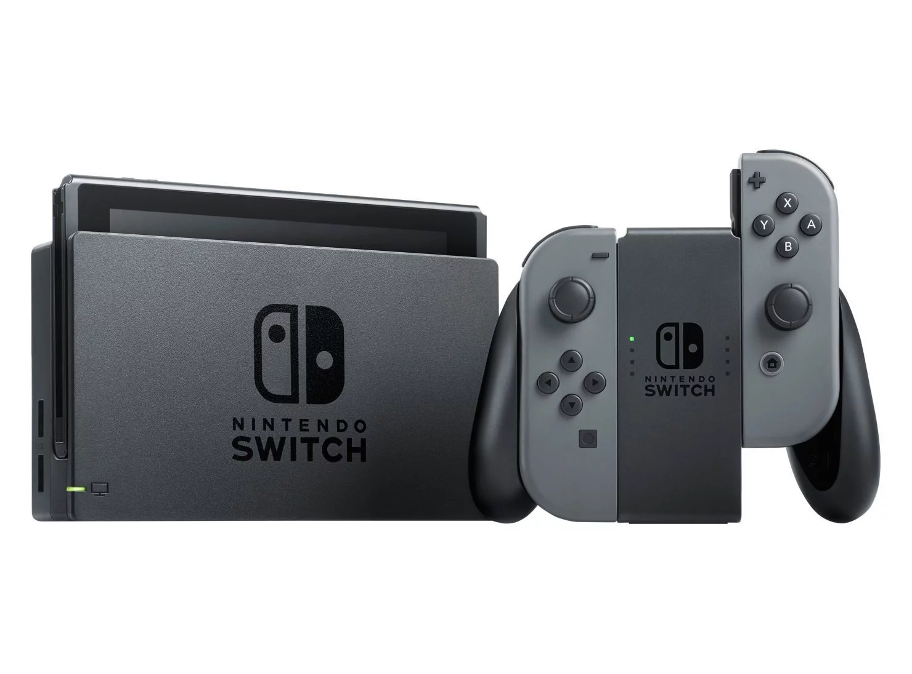

 Es la novena consola de videojuegos principal desarrollada por Nintendo. Conocida en el desarrollo por su nombre código «NX», se dio a conocer en octubre de 2016 y fue lanzada mundialmente el 3 de marzo de 2017. Nintendo considera a Switch una consola híbrida. Se puede utilizar como consola de sobremesa con la unidad principal insertada en una estación de acoplamiento para conectarla con un televisor. Alternativamente, puede ser extraída de la base y utilizada de forma similar a una tableta a través de su pantalla táctil LCD, o colocada sobre una superficie gracias a su soporte plástico integrado siendo así visible por varios jugadores.